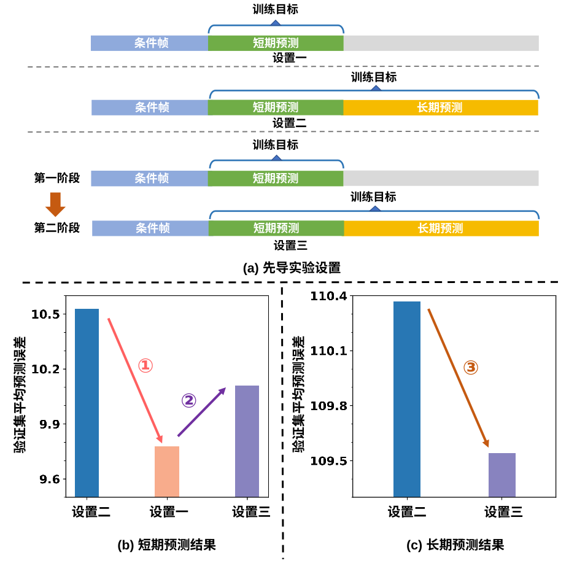
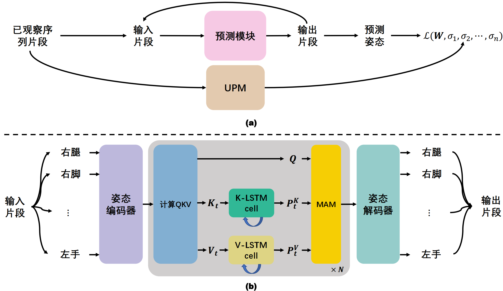
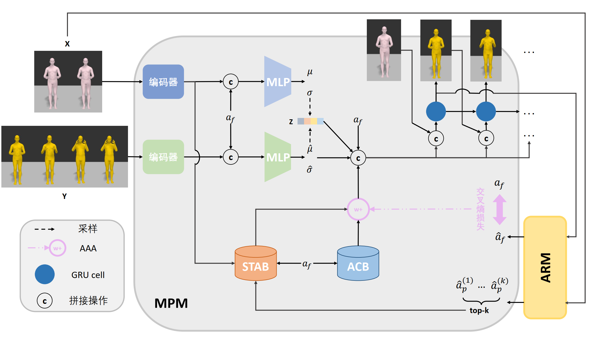

Ms student in SYSU.
Research area：
- 3D Human Motion Prediction
- Continual Learning
🎓 Education
- 2022.09 - 2025.06,
 Sun Yat-Sen University, MS
Sun Yat-Sen University, MS - 2018.09 - 2022.06, Sun Yat-Sen University, BS
📝 Paper
NeurIPS 2023

VI 2023

CVPR 2025

- Jianwei Tang, Hong Yang, Tengyue Chen, Jian-Fang Hu. Stochastic Human Motion Prediction with Memory of Action Transition and Action Characteristic. IEEE Conference on Computer Vision and Pattern Recognition, 2025, Accepted. (CCF-A) [Homepage] [PDF] [Code]